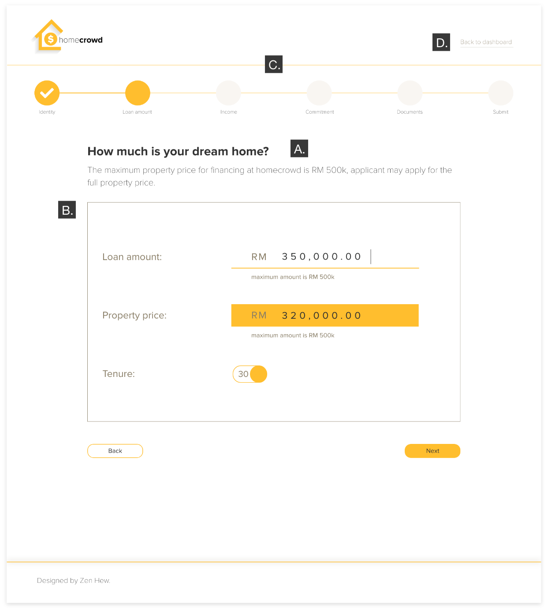
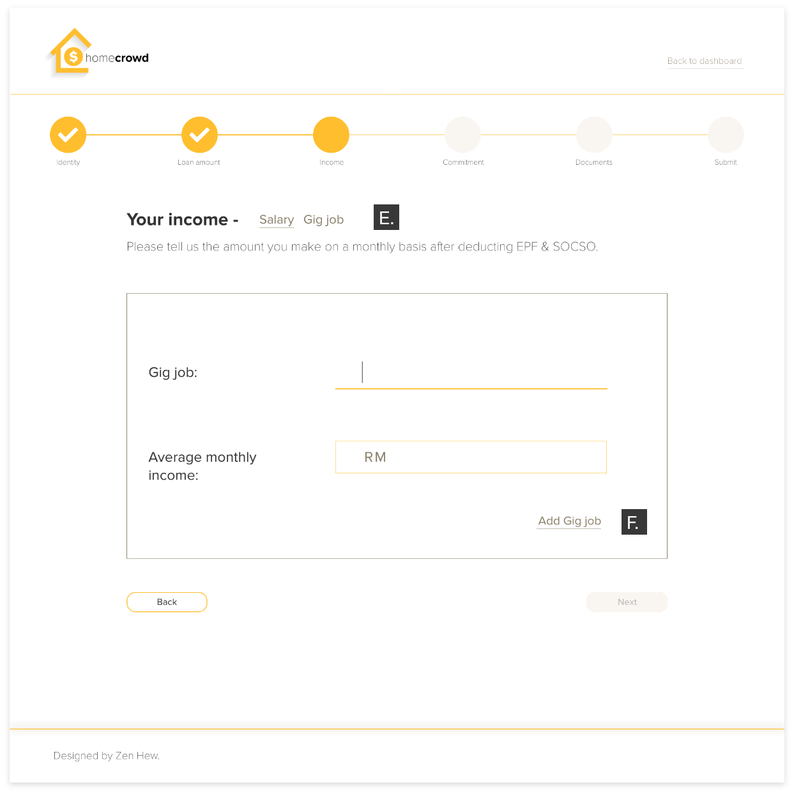
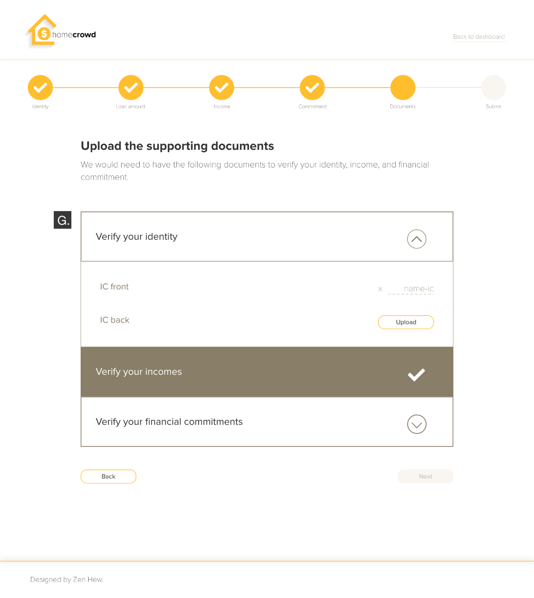

- Platform
Web - Deliverables
UX Strategy & UI - Tools
Adobe XD. & Illustrator - Duration
1 month (Aug 2020)
Home Crowd's Ambitious Mission
is to help millennials, who are underserved by traditional financial institutions, to home ownership. Home Crowd targets young & promising Malaysians who are shaping the landscape of the modern economy––the gig culture & professions conceived in the digital era––but rejected by banks for mortgage loans. The goal was to simplify the loan application process and make the overall experience more engaging once new users are onboard.
The Old Design
Dull dashboard and the form looks like a replica of paper form.
IC number is requested upon signing up, and has led visitors to look at the log in page.
This behaviour seemingly proved people had little trust with the platform to provide confidential detail at the outset.

Borrower Inputs vs. Vetting Process
In many ways, Home Crowd’s vetting process still functions in similar ways as banks do. There is a baseline for borrowers to pass its debt-service ratio (the ability for loan repayment), and also incur different interest rates based on the borrower’s overall credit score.
However, Home Crowd takes into consideration more aspects of the borrower’s circumstances and intended property for its comprehensive credit scoring. Thus, the slew of questions or fields can mean a cumbersome experience to a user.
The solution:
break down the application process in accordance with Home Crowd’s vetting process.
The borrower has to pass through 3 stages of the online application for assessment before securing a crowd-funding campaign.
The assessments are categorised as:
- Quantitative; debt-service ratio.
- Qualitative; borrower’s character, background & property use.
- Misc. verification; the details that are not factored into a borrower’s credit score.
Input Fields On Demand
The general idea of the design is to keep each screen as few input fields as possible for faster completion.
Since Home Crowd’s targeted audience are people whose livelihood are not confined in a cookie cutter fashion, users should then be able to personalise the input fields wherever necessary, so their application journey can be more straightforward.
Everything Has Its Own Place & Function
-
The title is where the screen will scroll into view; the first thing the user sees hence the bold and big font.
It is crucial that the title on every touch-point emulates the tone and language of a real life customer service representative. This makes the online experience of form filling more friendly and painless. Throughout the web-app, only layman terms are to be used. - The box-border frames each section of the form as the focal point of the screen, increasing the user’s attention towards the form fields within it. Once done on each section, the ‘Next’ button lies just outside the box on the bottom right –– a familiar subsequent call-to-action position.
- The progress bar not only shows the user what sections lie ahead but by indicating a ticked bar, it can act as a reward-feedback system for the user to continue to finish the course. Furthermore, the progress bar allows flexibility to navigate back to previously filled fields, but ensuing sections are not accessible until the current section is done.
- The form’s exit button (Back to dashboard) in a thin font is tucked away on the top right corner to minimize exit rate. Should the user want to drop-out of the course, the presumed behaviour would be to scroll back upwards. 
- Breadcrumbs personalised to the user’s selection in the Income & Commitment sections. This is also the peak of the form filling process, which for some users will be more tedious if they have multiple streams of income or more than the usual number of commitments.
- Multiple similar concerns –– credit card, gig job, investment etc –– can be added as and when it is reflective of the user’s circumstances. Besides lessening the user’s mental effort required by taking one at a time, it also aligned with Home Crowd’s big idea to gather as many data points as possible from a user. 
- The Peak-End rules here: after supplying a series of information, the user's last task is to simply upload their readily available documents from their device. The final task is quick and only contained in a single screen, so as to leave an impression of an easy online application.
Disclaimer: For the purpose of this portfolio, the final design works and Home Crowd's logo have been been redesigned by me to enhance their aesthetic appeal. Due to the Client's tight budget and timeframe for the project, the designs delivered to the Client are different; the Client also did not ship the final product as per designed.